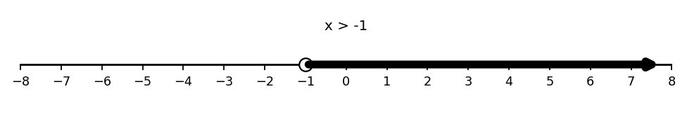

Let \(f(x)=x+5\) and \(g(x)=x-2\).
Let \(p(x)=x^2\) and \(q(x)=3x\).
Let \(f(x)=x^2-1\) and \(g(x)=2x+5\).
Let \(f(x)=x^2-4\) and \(g(x)=x-2\).
Rewrite each radical using rational exponent notation.
\(\sqrt{x^3}\)
\(\sqrt[3]{x^2}\)
\(\sqrt[4]{x^7}\)
\(\sqrt[5]{x^4}\)
Rewrite each expression using radical notation.
\(x^{3/2}\)
\(x^{2/3}\)
\(x^{5/4}\)
\(x^{7/5}\)
Fill in the blanks.
For \(x^{m/n}\), the denominator \(n\) tells the ______, and the numerator \(m\) tells the ______.
Match each radical to an equivalent rational exponent form.
\(\sqrt[3]{a^5}\)
\(\sqrt{b^7}\)
\(\sqrt[4]{m^3}\)
\(\sqrt[6]{n^5}\)
Choices:
\(b^{7/2}\)
\(m^{3/4}\)
\(a^{5/3}\)
\(n^{5/6}\)
Evaluate each expression without a calculator.
\(25^{3/2}\)
\(8^{2/3}\)
\(16^{3/4}\)
\(32^{2/5}\)
Evaluate each expression without a calculator.
\(64^{2/3}\)
\(125^{4/3}\)
\(81^{3/4}\)
\(\left(\dfrac{27}{8}\right)^{2/3}\)
A student says:
“\(\sqrt[3]{x^2}\) and \(\sqrt{x^3}\) are basically the same because both have a \(2\) and a \(3\).”
Explain why the expressions are not equivalent.
Simplify and evaluate:
\[\left(125^{2/3}\right)^{-1}\cdot 25^{1/2}.\]
Rewrite each factor using radical notation.
Evaluate each factor exactly.
Simplify the product.
Explain how negative exponents and rational exponents interact.
Write the interval \((3, 9]\) as an inequality.
Write the graph shown on the number line as an inequality.

Translate each representation.
A student writes \(x> -1\) as \([-1,\infty)\). Identify the mistake and write the correct interval notation.